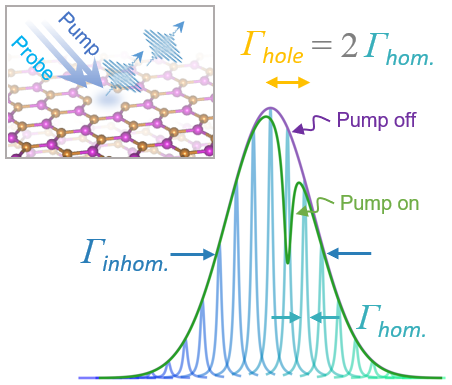
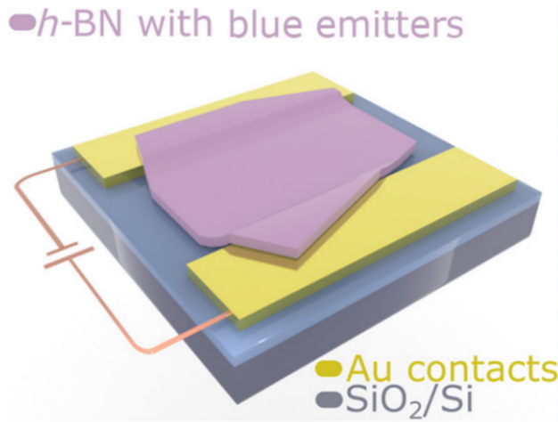
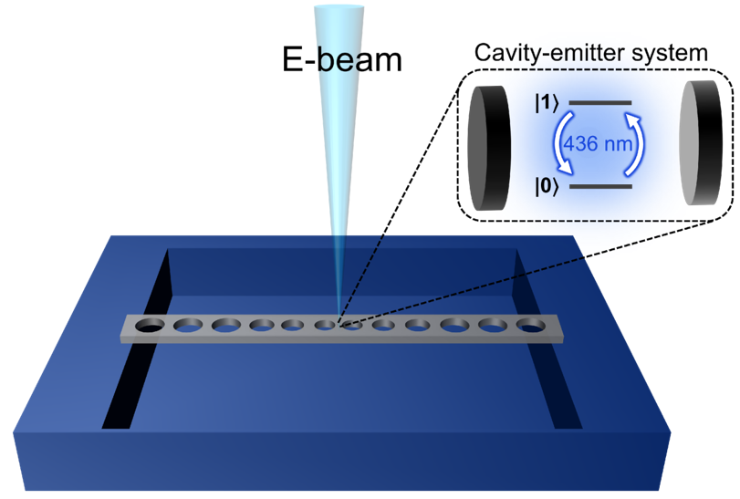
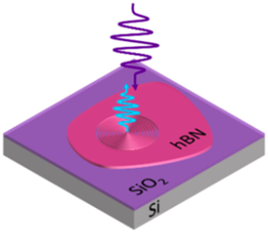

Highlights
Coherence properties of electron-beam-activated emitters in hexagonal boron nitride under resonant excitation
(Editor's Choice)
Physical Review Applied 18, 6, 064021 (2022)
→ The first resonant spectroscopy work on the B centre in hexagonal boron nitride.
Engineering quantum light sources with flat optics
(Invited Review)
Advanced Materials 36, 23, 2313589 (2024)
→ A comprehensive assessment examining the use of metaoptics with quantum photonic systems.
Optical manipulation of spin resonance in gallium nitride
(News and Views)
Nature Photonics 18, 4, 309-310 (2024)
→ A succinct commentary on a novel and promising result in a CMOS-compatible material.
The B centre in hBN
My Ph.D. research has primarily focused on cryogenic spectroscopy of B centre quantum emitters in hexagonal boron nitride. This emitter class has a consistent ZPL energy and can be generated deterministically using electron beam irradiation. This allows for efficient characterisation as well as integration into nanophotonic structures. Checkout this overview I presented at the Attocube 2D Materials Conference in 2024.
The promising potential of the B centre was uncovered in my first paper, where I found that the optical coherence of single centres was sufficient to sustain Rabi oscillations under continuous resonant excitation. 👉 Read more here

The transition linewidth is typically an order of magnitude larger than the lifetime limit. Using a dual laser pump-probe method known as spectral hole burning, I determined that the majority of this broadening is due to spectral diffusion, with a much smaller amount attributed to phonon dephasing. 👉 Read more here
The ability to shift the ZPL is advantageous for tuning B centres into resonance with a cavity, or tuning multiple emitters into resonance with each other. Both cases lead to interesting quantum optical phenomena. I used an interdigitated micro-electrode structure to apply in-plane static electric fields and found that the B centre ZPL can shift as much as 2000 times the natural linewidth. 👉 Read more here
Linewidth broadening can be address by coupling the B centre to a high Q, low mode-volume cavity. This increases the spontaneous emission rate relative to the diffusion and dephasing rates, meaning the emission is more coherent and brighter! I used a suspended 1D photonic crystal cavities made from hBN, each irradiated to produce a single B centre at its cavity hotspot. In the best case the emission was increased 4 fold. 👉 Read more here
One downside of the B centre is the emission wavelength at 436 nm. Many bulk optics and detectors are not optimised for this range, adding loss to the system. The dipole emission pattern of the B centre can be shaped using a circular Bragg grating, allowing for higher collection efficiency. I used an array of CBGs etched into an hBN flake, with a single B centre at each central disk. In the best case the emission was increased 6 fold. 👉 Read more here

All Publications
- Coherence Properties of Electron-Beam-Activated Emitters in Hexagonal Boron Nitride
Under Resonant Excitation
Jake Horder, Simon J.U. White, Angus Gale, Chi Li, Kenji Watanabe, Takashi Taniguchi, Mehran Kianinia, Igor Aharonovich, and Milos Toth
Physical Review Applied 18, 064021 – Published 8 December 2022 - Photophysics of blue quantum emitters in hexagonal boron nitride
Ivan Zhigulin, Karin Yamamura, Viktor Ivády, Angus Gale, Jake Horder, Charlene J Lobo, Mehran Kianinia, Milos Toth, and Igor Aharonovich
Materials for Quantum Technology 3, 1, 015002 – Published 7 March 2023 - Stark Effect of Blue Quantum Emitters in Hexagonal Boron Nitride
Ivan Zhigulin*, Jake Horder*, Viktor Ivády, Simon J.U. White, Angus Gale, Chi Li, Charlene J. Lobo, Milos Toth, Igor Aharonovich, and Mehran Kianinia
* These authors contributed equally
Physical Review Applied 19, 044011 – Published 5 April 2023 - Deterministic Fabrication of a Coupled Cavity–Emitter System in Hexagonal Boron
Nitride
Milad Nonahal*, Jake Horder*, Angus Gale*, Lu Ding, Chi Li, Madeline Hennessey, Son Tung Ha, Milos Toth, and Igor Aharonovich
* These authors contributed equally
Nano Letters 23, 14, 6645–6650 – Published 7 July 2023 - Annealing of blue quantum emitters in carbon-doped hexagonal boron nitride
Yongliang Chen, Angus Gale, Karin Yamamura, Jake Horder, Alexander Condos, Kenji Watanabe, Takashi Taniguchi, Milos Toth, and Igor Aharonovich
Applied Physics Letters 123, 041902 – Published 24 July 2023 - Monolithic integration of single quantum emitters in hBN bullseye cavities
Lesley Spencer, Jake Horder, Sejeong Kim, Milos Toth, and Igor Aharonovich
ACS Photonics 10, 12, 4417–4424 – Published 17 November 2023 - Scalable bright and pure single photon sources by droplet epitaxy on InP nanowire arrays
Xiaoying Huang, Jake Horder, Wei Wen Wong, Naiyin Wang, Yue Bian, Karin Yamamura, Igor Aharonovich, Chennupati Jagadish, and Hark Hoe Tan
ACS Nano 18, 7, 5581–5589 – Published 4 February 2024 - Engineering quantum light sources with flat optics
Jinyong Ma*, Jihua Zhang*, Jake Horder*, Andrey A. Sukhorukov, Milos Toth, Dragomir N. Neshev, and Igor Aharonovich
* These authors contributed equally
Advanced Materials 36, 23, 2313589 – Published 13 March 2024 - Optical manipulation of spin resonance in gallium nitride
Jake Horder and Igor Aharonovich
Nature Photonics 18, 309–310 – Published 5 April 2024 - Near-coherent quantum emitters in hexagonal boron nitride with discrete polarization
axes
Jake Horder, Dominic Scognamiglio, Ádám Ganyecz, Viktor Ivády, Nathan Coste, Mehran Kianinia, Milos Toth, and Igor Aharonovich
ACS Photonics 11, 10, 3954–3959 – Published 23 September 2024 - Narrowband Electroluminescence from Color Centers in Hexagonal Boron Nitride
Gyuna Park, Ivan Zhigulin, Hoyoung Jung, Jake Horder, Karin Yamamura, Yerin Han, Kenji Watanabe, Takashi Taniguchi, Igor Aharonovich, and Jonghwan Kim
Nano Letters 24, 48, 15268–15274 – Published 21 October 2024 - Double Etch Method for the Fabrication of Nanophotonic Devices from Van der Waals
Materials
Otto Cranwell Schaeper, Lesley Spencer, Dominic Scognamiglio, Waleed El-Sayed, Benjamin Whitefield, Jake Horder, Nathan Coste, Paul Barclay, Milos Toth, Anastasiia Zalogina, Igor Aharonovich
ACS Photonics 11, 12, 5446–5452 – Published 20 November 2024 - Optical Coherence of B Center Quantum Emitters in Hexagonal Boron Nitride
Jake Horder*, Dominic Scognamiglio*, Nathan Coste, Angus Gale, Kenji Watanabe, Takashi Taniguchi, Mehran Kianinia, Milos Toth and Igor Aharonovich
* These authors contributed equally
ACS Photonics 12, 3, 1284-1290 – Published 13 January 2025 - Quantum Emitters in Flux Grown hBN
Evan Williams, Angus Gale, Jake Horder, Dominic Scognamiglio, Milos Toth and Igor Aharonovich
Crystal Growth & Design 25, 7, 2083-2089 – Published 18 March 2025 - Bottom-up Single Quantum Dots in Microring Resonators for On-Chip Integrated Single Emitters
Xiaoying Huang, Jake Horder, Karin Yamamura, Wei Wen Wong, Igor Aharonovich, Naiyin Wang, Chennupati Jagadish, and Hark Hoe Tan
Nano Letters 25, 5, 6318-6324 – Published 7 April 2025 - Quantum Emitters in Rhombohedral Boron Nitride
Angus Gale, Jake Horder, Milos Toth and Igor Aharonovich
Submitted
Proceedings
- Resonant Spectroscopy of Blue Quantum Emitters in Hexagonal Boron Nitride
Jake Horder, Simon J.U. White, Angus Gale, Chi Li, Kenji Watanabe, Takashi Taniguchi, Mehran Kianinia, Igor Aharonovich, and Milos Toth
in CLEO 2023, Technical Digest Series (Optica Publishing Group, 2023), paper FM1E.2. - Electroluminescence from isolated colour centres in hexagonal boron nitride
Gyuna Park, Ivan Zhigulin, Hoyoung Jung, Jake Horder, Karin Yamamura, Yerin Han, Hyunje Cho, Hyeon-Woo Jeong, Kenji Watanabe, Takashi Taniguchi, Myungchul Oh, Gil-Ho Lee, Moon-Ho Jo, Igor Aharonovich, Jonghwan Kim
in CLEO-PR 2024, Technical Digest Series (Optica Publishing Group, 2024), paper PDP_2. - Near-coherent Quantum Emitters in Hexagonal Boron Nitride with Discrete Polarization Axes
Jake Horder, Dominic Scognamiglio, Ádám Ganyecz, Viktor Ivády, Nathan Coste, Mehran Kianinia, Milos Toth, and Igor Aharonovich
in CLEO 2024, Technical Digest Series (Optica Publishing Group, 2024), paper FTh5B.1. - Room Temperature Electroluminescence from Isolated Colour Centres in Van Der Waals
Semiconductors
Gyuna Park, Ivan Zhigulin, Hoyoung Jung, Jake Horder, Karin Yamamura, Yerin Han, Hyunje Cho, Hyeon-Woo Jeong, Kenji Watanabe, Takashi Taniguchi, Myungchul Oh, Gil-Ho Lee, Moon-Ho Jo, Igor Aharonovich, Jonghwan Kim
in CLEO 2024, Technical Digest Series (Optica Publishing Group, 2024), paper FTh5B.2.
Presentations
- Resonant Spectroscopy of Blue Quantum Emitters in Hexagonal Boron Nitride
Jake Horder
Australian Institute of Physics Congress, Adelaide SA Australia – Presented 13 December 2022 - Resonant Spectroscopy of Blue Quantum Emitters in Hexagonal Boron Nitride
Jake Horder
CLEO: Conference on Lasers and Electro-Optics, San Jose CA USA – Presented 8 May 2023 - Quantum Light in Flatland: sourcing indigo photons from nanostructures in hexagonal
boron nitride
Jake Horder
Australian Institute of Physics NSW Postgraduate Awards, Sydney NSW Australia – Presented 14 November 2023 - Quantum Technologies with Single Photon Emitters in Hexagonal Boron Nitride
Jake Horder
ARC Centre of Excellence for Transformative Meta-Optical Systems (TMOS) Meta Together Conference, Moreton Island QLD Australia – Presented 13 December 2023 - Near-coherent quantum emitters in hexagonal boron nitride with discrete polarization
axes
Jake Horder
ARC Centre of Excellence for Transformative Meta-Optical Systems (TMOS) Science Tuesdays, UTS, Sydney NSW Australia – Presented 27 February 2024 - Near-coherent quantum emitters in hexagonal boron nitride with discrete polarization
axes (accepted Postdeadline)
Jake Horder
CLEO: Conference on Lasers and Electro-Optics, Charlotte NC USA – Presented 9 May 2024 by proxy courtesy of Ivan Zhigulin - Near-coherent quantum emitters in hexagonal boron nitride with discrete polarization
axes (Poster)
Jake Horder
Boron Nitride Workshop, UTS, Sydney NSW Australia – Presented 22 May 2024 - Near-coherent quantum emitters in hexagonal boron nitride with discrete polarization
axes
Jake Horder
Attocube 2D Materials Conference, Munich Germany – Presented 6 June 2024 - The B Centre in hBN: a Promising Source of Near-Coherent Single Photons with Discrete Polarisation Axes (Poster)
Jake Horder
Defects in Solids for Quantum Technologies, Budapest Hungary - Presented 12 June 2024 - The B Centre in hBN: a Promising Source of Near-Coherent Single Photons with Discrete Polarisation Axes (Poster)
Jake Horder
Australian Institute of Physics Congress, Melbourne VIC Australia – Presented 2 December 2024, withdrawn